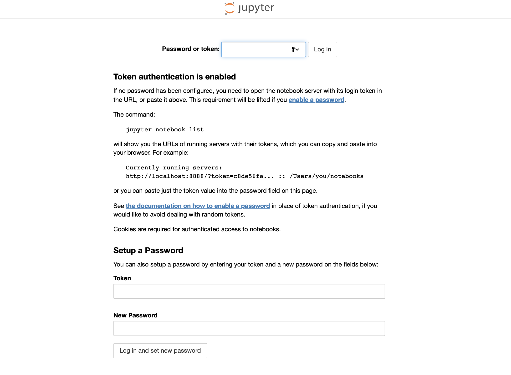

Welcome to The Wicked Data Scientist. As this is my first blog post, I decided to introduce myself and the reason for this blog a little bit. As you can read in the about page of this blog, I am a bioinformatician and data scientist, working at the Telethon Kids Institute in Perth, Western Australia. You can read all about it on their website. I probably have to say that all views and opinions on this site are mine and do not reflect any opinions etc of my employer, as this is a private blog. The reason why I still mention my employer is, that my private interest and research interest are very tightly interlinked. Research, especially in personalised medicine, bioinformatics and genetics or other so called omics fields is relying on new methods in statistics, mathematics and machine learning, as the traditional way medical research is conducted is not always feasible for such big data sets. I have a background in social sciences (sociology and psychology), public health and hold a PhD in human biology.
During my PhD I was introduced to the exciting field of bioinformatics. I started out with learning the programming language R and developed my excitement and passion for programming. I added html, css and a bit of python to the list of my languages and naturally got hooked in the field of machine learning. My Post-Doc research evolves all around epigenetic and genetic data combined with the power of machine learning.
About a year ago, I have started a project that involved so called epigenetic data (for those who want to know what epigenetics is about, click here). The results of this project will probably be published later this year. In this project, I utilised differrent types of machine learning algorithms, such as random forest, elastic net regression, gradient boosting machine and support vector machine, to train a classification model based on epigenetic data. I will put a link to the paper in this post, once it is published. During this project, however, I did not take advantage of the ever growing field of deep learning. As I primarily use the programming language R for my analyses, I felt a bit "scared" to get into python at first. I know, everyone in the field says how easy it is to learn, but there are some concepts in R that are different to python and that you need to overcome first, when starting python. But others have written extensively about python versus R or why not both?
Lucky enough Perth has a flourishing machine learning community and weekly meetups of the Perth Machine Learning Group. I started attending these meetups about 1.5 years ago and it was a really good decision. The group supports the fast.ai course by Jermey Howard et al., which I now finally decided to start.
The course is in its third version now and as per website and info material, the course utilises the PyTorch library of the python language which is primarily developed by Facebook. On top of that, fast.ai has developed the fastai library, with the aim to "mak[e] deep learning easier to use and [to] get[...] more people from all backgrounds involved". The setup and everything required for the course (even advanced setup) is explained very nicely on the page. Hence, I am not going to talk about how to set up a AWS instance for example.
"... why can't I access the notebook remotely in the browser via port 8888?"
Let's assume you have set up a cloud instance and cloned the fast.ai repository from github:
git clone https://github.com/fastai/course-v3
Further, you have updated conda and set up the conda environment for the course:
And you have changed the directory to the course directory:conda update conda
conda install -c pytorch -c fastai fastai pytorch torchvision cuda92
cd course-v3/nbs/dl1
Now it is time to start up jupyter notebook, to access the course material. I am not running the course on AWS,
so my setup also involved
sudo apt install git) First of all, if your notebook is still running in the terminal Ctrl + C to stop it.
Now, you have to start jupyter without browser on the remote instance. You can also use nohup, which allows you to
exit the terminal without shutting down the jupyter notebook (which is what we will be doing here. If you don't want this, because you leave your
terminal window open anyways, just leave the nohup command out):
nohup jupyter notebook --no-browser &
Now, you open a new terminal window on your local machine and type the following:
ssh -i KEY -nNT -L 9999:localhost:8888 YOUR-HOST-NAME@XXX.XXX.XXX.XXX
I have added the -i KEY as you will probably have generated a key pair to access your cloud, so you need to
point to that when accessing the port forwarding. If not, leave it out and you should get a prompt for the password to access
the cloud (not recommended).
Now you open a browser and type in localhost:9999. You probably see the following now:

Jupyter prompts you for an access token. This is a way to secure your connection. To get your access token,
you will have to go back to the cloud terminal and type the following (it is best to establish a second remote connection in another
terminal window, so you make sure the jupyter notebook process is not exited):
jupyter notebook list
You will get an output like this:
http://localhost:8888/?token=TOKEN
Copy the TOKEN part (after the token=""), and paste it into the Password or token field in the
jupyter notebook browser window. Et voila, you have established a connection to your jupyter notebook on the remote host, via ssh tunnelling and port forwarding.
I hope this was useful. If you do not want to go through the hassle of setting up your own cloud instance (although I would recommend this at one stage, because you learn a lot!) You can also access the whole fast.ai content on kaggle
Thank you for reading, and until next time, your
Wicked Data Scientist